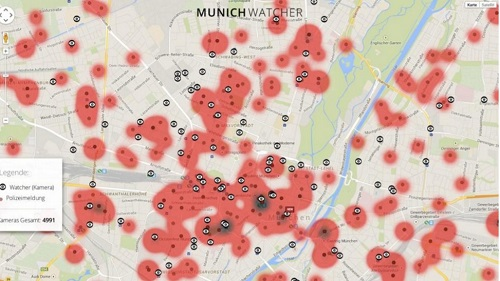

Munich Watcher
Prototyp einer überwachungskritischen App

Januar 2013, privates Projekt
Das Bayerische Landesamt für Gesundheit und Lebensmittelsicherheit publizierte gefundene Verstöße gegen die Lebensmittelbestimmungen auf seiner Webseite, bis ein Gerichtsurteil diese Praxis stoppte. Der automatisierte Twitter-Account las die Publikation aus und veröffentlichte die Ergebnisse auf Twitter.